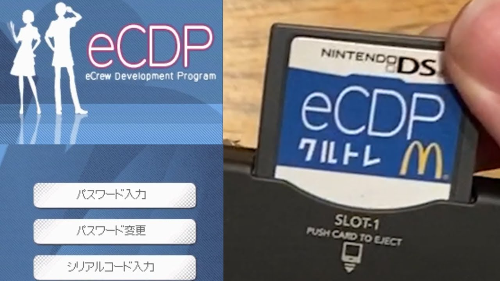

El juego de DS perdido de McDonals (eCDP training game)

¿¡Mcdonalds hizo un juego para la DS!? Sí, y para más inri era exclusivo para empleados (y bastante bueno,por cierto).
¿Con qué objetivo? Te preguntarás, pues bueno, ni más ni menos con el objetivo de servir cómo
un programa de entrenamiento para empleados, es decir, que viene con la promesa de la
empresa de que al jugarlo estarás preparado para trabajar en sus estableciminetos, ofertón ¿No?.
Bromas de lado, el juego llevaba perdido 10 años y fue recuperado el septiembre de este año gracias al
grabar y copiar el juego para llevarlo al público, desde depositar dinero en una subasta japonesa
al último momento hasta contactar con un modder retirado en alemania
para que le haga una 2ds para poder grabar el gameplay, de entre otros
(no puedo resumir tal vídeo en tan pocas líneas, muy recomendable de ver).
Gameplay completo
En este gameplay se puede apreciar que el juego le da mil patadas al cooking mama.